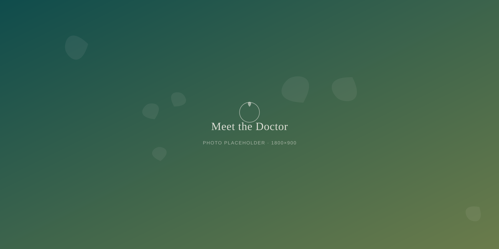
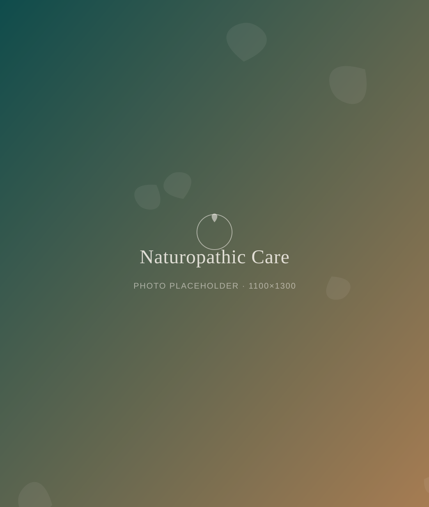

Onsite Care
Meet Dr. Elena Marsh, ND
Our onsite naturopathic physician believes healing happens best over time, over conversation, and never in a rush.
Her Story
A doctor who wanted more time with her patients
Dr. Marsh trained in naturopathic medicine at a four-year accredited naturopathic medical school, followed by clinical residency focused on herbal medicine, nutrition, and hormone health. Before Vine & Sunset, she practiced in a busy clinic where ten-minute visits were the norm.
She joined Vine & Sunset because she wanted to practice medicine differently: with enough time to actually hear a person's story, in a space that feels more like a friend's living room than a waiting room. She saw a community already gathering here over tea and elixirs, and knew it was the right home for real, unhurried care.
Her philosophy is simple. The body is capable of healing when it gets the right support — herbs, food, rest, and a doctor who is paying full attention. She treats the whole person, not just a symptom on a chart.

Areas of Focus
What Dr. Marsh treats most often
Herbal Medicine
Time-tested botanicals matched to your body, not a one-size-fits-all bottle.
Nutrition & Gut Health
Food as a first tool for digestion, energy, and how you feel every day.
Stress & Sleep
Practical support for a nervous system that's been running on empty.
Women's Wellness
Hormone health and cycle support at every stage of life, on your timeline.

Your First Visit
What to expect the first time
Your visit happens in a quiet treatment room tucked inside Vine & Sunset, just steps from the elixir bar. It's warm, private, and nothing like a clinic hallway.
Plan on about an hour together. Dr. Marsh will ask about your health history, your daily life, and what you actually want to feel better. There's no clipboard rush and no watching the clock — just a real conversation and a plan you helped build.
Book a Wellness VisitIn Their Words
What patients say about Dr. Marsh
"For the first time, a doctor sat with me for an hour instead of ten minutes. Dr. Marsh listened to my whole story before she said a word about treatment. I finally feel like someone is paying attention."
Ready When You Are
Sit down with Dr. Marsh
No rushing, no judgment, and no ten-minute time limit. Just an hour of real care, right here at Vine & Sunset.